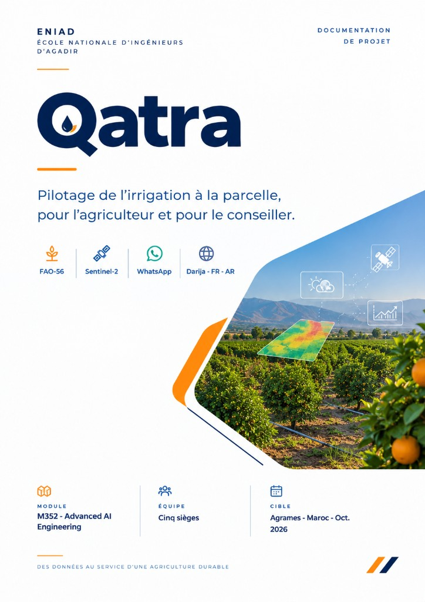

Irrigation
Besoin restant de la culture, en millimètres, après la pluie utile et l'eau déjà apportée.

L'agriculteur lit le résultat sur un site de téléphone et par notification (site ou Telegram). Le conseiller voit les mêmes parcelles sur une carte. Le chiffre vient d'un bilan hydrique FAO-56. Le modèle de langage (Ollama en local) explique ce chiffre déjà calculé, en darija, en français et en arabe.
Besoin restant de la culture, en millimètres, après la pluie utile et l'eau déjà apportée.
NDVI et NDWI Sentinel-2, avec la date de l'image. Si les nuages cachent la parcelle, Sentinel-1 sert de repli, sans inventer d'indice.
Alerte de risque selon la météo, volume lié à la surface, et blocage si le vent dépasse 15 km/h.
Qatra ne remplace pas le tour d'eau d'un ORMVA. Il aide à utiliser l'eau le jour où elle arrive.
Au Maroc, l'agriculture concentre l'essentiel de l'eau consommée, et les années sèches se répètent. Les réseaux se modernisent et le goutte-à-goutte se généralise. La décision du jour, sur une parcelle précise, reste souvent une habitude : trop tôt, trop tard, ou la même dose pour un sol, un stade et une pluie différents.
Le bulletin régional donne le même message à toute une plaine. Deux parcelles voisines ne vivent pas la même semaine. Le conseiller de l'ORMVA, de la coopérative ou de l'association d'usagers ne peut pas visiter chaque exploitation. Une erreur à la floraison ou au grossissement se paie sur le rendement.
Il dessine sa parcelle, indique la culture, le système d'irrigation et la dernière irrigation. Il lit la carte du jour. S'il l'a demandé, il reçoit une notification (site ou Telegram) quand la consigne change.
Il suit plusieurs parcelles : une carte du statut, une liste de visites, et le total d'eau de la saison. Il voit les parcelles qui lui sont liées, pas celles des autres.
L'intelligence artificielle est autour du calcul, pas à la place du calcul. Quatre rôles sont séparés pour qu'une erreur reste visible.
Fonctions Python déterministes. Les mêmes entrées donnent toujours le même résultat. La table des coefficients a une version.
Un calcul d'indice et un drapeau de qualité. Une baisse de NDVI signale un changement du couvert. Elle ne prouve pas, seule, qu'il faut irriguer.
Il autorise show_dose ou il renvoie needs_check. Le vent au-dessus de 15 km/h bloque le texte de pulvérisation.
Le seul module autorisé à appeler un modèle de langage. Chaque nombre du texte existe déjà dans le JSON validé.
ETc est la consommation estimée de la culture, en millimètres par jour. Kc est le coefficient cultural du stade. ET0 est l'évapotranspiration de référence, calculée par Penman-Monteith. Jour d'exemple, verrouillé par un test : ET0 = 4,2 mm, Kc = 0,75, donc ETc = 3,15 mm.
Le moteur met ensuite à jour l'eau de la zone racinaire. Il ajoute l'irrigation déjà enregistrée et seulement la part utile de la pluie prévue. Il soustrait ETc. Il transforme le déficit net en dose brute selon l'efficience du goutte-à-goutte ou de l'irrigation de surface.
Une dose précise n'est montrée que si le stade est connu, la méthode d'irrigation est connue, la météo a moins de 48 heures, et l'image satellite, si elle existe, a au plus 10 jours avec au moins 70 % de pixels valides. Sinon le statut est needs_check.
Un site Next.js sert l'agriculteur et le conseiller. Une API FastAPI porte le pipeline. PostgreSQL avec PostGIS garde les polygones. Redis file le travail du jour. La page et les notifications parlent à l'API. Aucun des deux n'invente une dose.
Carte Leaflet, formulaire, notification ou Telegram.
Charge la parcelle et appelle les agents dans l'ordre.
Météo, satellite, bilan, risque, validateur.
Texte en trois langues, carte, liste de visites.
Chaque agent a une entrée, une sortie, et un siège. L'orchestrateur les appelle dans l'ordre. Aucun agent n'invente une dose.
| Agent | Rôle | Siège |
|---|---|---|
| Orchestrateur | Charge le profil, enchaîne les appels, enregistre ce qui manque. | Backend |
| Météo | Température, humidité, vent, pluie et rayonnement Open-Meteo, avec l'heure de la requête. | Agronomie |
| Satellite | Sentinel-2, masque nuageux, NDVI, NDWI, date, part de pixels valides, image de vigueur. Sentinel-1 si l'optique est trop nuageuse. | Satellite |
| Agronome | ET0 Penman-Monteith, ETc, bilan racinaire, risque fongique, volume de bouillie, blocage vent. | Agronomie |
| Validateur | Unités, fraîcheur, stade, méthode. Il peut empêcher l'affichage d'une dose précise. | Backend |
| Explication | Darija, français, arabe, à partir du JSON et de pages FAO et INRA, via Ollama en local. Ask Qatra sur le site et depuis Telegram. | Explication |
| Interface | Carte Leaflet, écrans, notifications site ou Telegram, note vocale (Piper / Web Speech). Le texte part toujours avec l'audio. | Interface |
Si le modèle de langage est indisponible, un modèle de phrase écrit en code remplit les trois langues. La démonstration doit tenir avec le réseau du modèle coupé.
Quatre familles de données. Rien n'est inventé pour combler un trou.
| Famille | Source | Usage |
|---|---|---|
| Météo | Open-Meteo. La Direction de la météorologie nationale si l'accès s'ouvre. | ET0, pluie passée, pluie prévue, vent. |
| Satellite | Sentinel-2 et Sentinel-1, via Copernicus Data Space (Earth Engine si éligible). FAO WaPOR plus tard. | Couvert, date, qualité. |
| Parcelle | Ce que l'agriculteur déclare. | Culture, stade, polygone, système, irrigations, notes de sol. |
| Agronomie | FAO-56, INRA, bulletins publics du ministère pour l'explication. | Le calcul. Les bulletins ne remplacent pas la formule. |
Le fichier docs/contract.json est la forme commune. Extrait du jour d'exemple, parcelle MA-001 :
{
"plot_id": "MA-001", "crop": "citrus", "stage": "fruit_growth",
"area_ha": 1.2, "irrigation_method": "drip",
"et0_mm_day": 4.2, "et0_source": "penman_monteith", "kc": 0.75, "etc_mm": 3.15,
"effective_rain_mm": 1.5, "gross_irrigation_mm": 4.7,
"ndvi": 0.68, "ndvi_observed_at": "2026-10-11", "valid_pixel_pct": 86,
"wind_kmh": 9, "spray_blocked": false, "disease_risk": "low",
"status": "show_dose", "reasons": ["fruit_growth", "rain_reduces_need"],
"engine_version": "0.1.0"
}
| Pièce | Choix | Coût / note |
|---|---|---|
| Cartographie | Leaflet + OpenStreetMap | Gratuit. Afficher la carte et dessiner les limites des parcelles. Remplace Mapbox. |
| Images satellitaires | Sentinel-1 / Sentinel-2 via Copernicus Data Space | Gratuit sous conditions. Google Earth Engine possible pour usages éligibles (recherche non commerciale). |
| API conversationnelle | Ollama, modèle open source en local | Sans frais d'API. Dépend des capacités matérielles de la machine. |
| Synthèse vocale | Piper ou Web Speech API | Gratuit en local. Tester la qualité des voix avant de trancher pour la darija. |
| Notifications | Notifications du site, ou Telegram Bot | Alternative gratuite à WhatsApp Cloud API, qui peut entraîner des coûts. |
| Site | Next.js, TypeScript, Leaflet | Un seul site, téléphone et ordinateur. |
| API | Python, FastAPI | Orchestrateur, moteur, validateur, explication. Routes sous /api/v1. |
| Données | PostgreSQL, PostGIS, Redis | Polygones et surface. Redis file le travail quotidien. |
| Comptes | JWT, bcrypt | Agriculteur et conseiller. Auth publique limitée. |
| Météo | Open-Meteo | Prévision de base sans clé. |
| Exécution | Docker Compose, GitHub Actions | API, PostGIS, Redis. Puis Prometheus et Grafana. |
| Méthode | Chemin | Rôle |
|---|---|---|
| POST | /api/v1/auth/register | Créer un compte, rendre un JWT |
| POST | /api/v1/auth/login | Rendre un JWT |
| POST | /api/v1/plots | Créer une parcelle depuis un GeoJSON |
| GET | /api/v1/plots | Lister les parcelles de l'appelant |
| POST | /api/v1/plots/{id}/recommendation | Lancer le pipeline et stocker une ligne |
| GET | /api/v1/plots/{id}/recommendations | Historique |
| POST | /api/v1/plots/{id}/ask | Répondre depuis la dernière ligne |
| GET | /api/v1/advisor/plots | Parcelles liées, statut, stade, déficit, total de saison |
| POST | /api/v1/telegram/webhook | Question entrante (Telegram), vers Ask Qatra |
Carte du Maroc et ses parcelles. Formulaire. Carte de résultat : statut, raisons, ETc, heures des données, pulvérisation, trois langues, image de vigueur. Ask Qatra.
Carte colorée par statut. Liste de visites : stade sensible d'abord, puis déficit le plus haut. Bilan de saison : pluie, eau conseillée, besoin estimé.
Le site ou Telegram reprend le texte validé quand la consigne change. La note vocale s'ajoute si Piper ou Web Speech renvoie un fichier.
09 · OrganisationCinq personnes, cinq sièges. Un dépôt, une branche par personne, une relecture par un coéquipier. Le lundi fixe le but. Le vendredi, chacun montre son travail sur MA-001.
| Siège | Construit |
|---|---|
| Backend | Comptes, PostGIS, API, orchestrateur, validateur, Docker Compose. |
| Satellite | Copernicus Data Space, NDVI, NDWI, masque nuageux, repli Sentinel-1, images de vigueur. |
| Agronomie | Open-Meteo, Penman-Monteith, bilan, règles de risque, volume de bouillie, tests. |
| Interface | Leaflet, tableaux de bord, notifications / Telegram, voix darija (Piper / Web Speech). |
| Explication | Textes, Ask Qatra, Ollama en local, test du chemin quotidien, GitHub Actions. |
| Semaine | Preuve |
|---|---|
| 1 · Contrat | Compose, parcelle exemple, test 3,15 mm, carte Leaflet, darija et français. |
| 2 · Comptes | Inscription, polygone réel, météo live, NDVI et NDWI, trois langues. |
| 3 · Bilan | Orchestrateur, masque nuageux, zone racinaire, formulaire aligné. |
| 4 · Une parcelle | Validateur sur MA-001, image de vigueur, heures séparées. |
| 5 · Carte agriculteur | Historique, volume de bouillie, Ask Qatra. |
| 6 · Conseiller | Liste conseiller, travail satellite, floraison, notification ou Telegram. |
| 7 · Messages | Parcelles privées, blocage vent, note vocale. |
| 8 · Soutenance | README, tests verts, démo téléphone et conseiller. |
Dépôt : github.com/AmineElAtrache/Qatra · Secrets dans .env, jamais dans git.
Qatra n'est pas la première aide à l'irrigation. Les chiffres d'économie d'eau cités plus bas sont ceux publiés par ces produits. Ils ne sont pas des résultats de Qatra.
Le conseil public de la plaine. Légitime, et le même pour beaucoup de parcelles. Il ne dessine pas un polygone et n'explique pas pourquoi deux voisins devraient agir différemment cette semaine.
Le logiciel de référence de la FAO pour FAO-56. C'est la famille de calcul que Qatra reprend. CROPWAT est un outil de bureau pour un technicien, pas une carte de téléphone ni un message en darija.
Produit marocain déjà en service. SOWATER donne un conseil du jour et un calendrier sur plusieurs jours à partir de la culture, d'un indice de végétation et de la météo. SOWIT indique qu'une étude USAID WE4F a mesuré, chez des clients, une économie d'eau d'environ 20 à 25 %. C'est le produit le plus proche, avec l'avance du terrain. Qatra ne reprend pas ce pourcentage.
Service commercial. Conseil quotidien à partir du satellite thermique, humidité du sol estimée à environ 10 m, plan sur plusieurs jours. En avance dès que la question est « combien d'eau reste dans le sol ». Abonnement commercial, pas un moteur ouvert de cours.
| Solution | Échelle | Capteur | Méthode | Preuve |
|---|---|---|---|---|
| Bulletin ORMVA | Plaine | Non | Conseil régional | Pratique officielle |
| CROPWAT | Calcul culture | Non | FAO-56 | Référence FAO |
| SOWATER | Parcelle | Optionnel | Satellite, météo, culture | Fermes, étude WE4F citée par SOWIT |
| IrriWatch | Pixel ~10 m | Non | Thermique et bilan | Produit commercial quotidien |
| Qatra | Parcelle dessinée | Non pour commencer | FAO-56, NDVI, validateur | Prototype de cours |
Qatra est le meilleur choix pour expliquer, en darija, en français et en arabe, le besoin en eau d'une parcelle d'agrumes que l'on vient de dessiner, sans capteur, avec un chiffre rejouable, et le même chiffre sur la carte du conseiller.
La consigne change avec le stade, la pluie de ce point et la date de l'image.
Le calcul FAO-56 arrive sur un téléphone, avec la qualité de la donnée et une liste de visites.
L'indice ne conclut pas seul. Le validateur peut cacher la dose.
Données publiques, moteur Python, contrat JSON, cinq modules défendables.
Qatra n'est pas en avance sur SOWATER pour l'usage réel, ni sur IrriWatch pour l'humidité thermique. C'est un prototype. Il devient crédible quand un agronome a relu les coefficients, puis quand une saison permet de comparer la dose conseillée à l'eau réellement apportée.
Document de projet, octobre 2026. Les valeurs 4,2 mm, 0,75 et 3,15 mm sont un exemple de test.